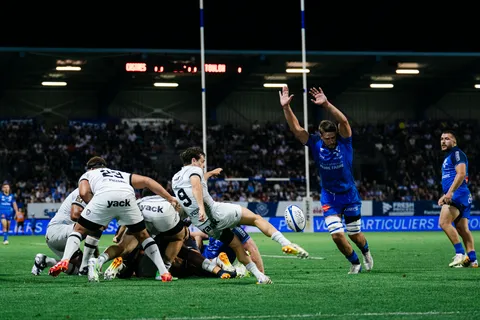
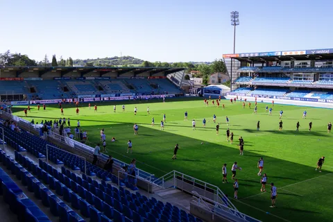
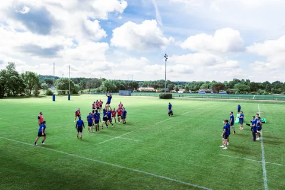

Match
De l’échauffement à l’après-match. La galerie complète le lendemain, ou une sélection le soir même et pendant le match pour vos réseaux.
Tarifs · Sport
Chaque club a ses besoins et son budget : les tarifs sont sur devis.

De l’échauffement à l’après-match. La galerie complète le lendemain, ou une sélection le soir même et pendant le match pour vos réseaux.

Gratuit pour le club. Les joueurs et les familles achètent leurs photos sur une galerie privée.

Les matchs à domicile, les portraits des joueurs en début de saison et des photos pour vos partenaires.
Le club utilise les photos pour sa communication (réseaux, site, presse, affiches), avec la mention © Thomas Soleil. Une publicité pour un partenaire se fait sur devis.
Déplacement calculé selon le lieu, indiqué dans le devis.